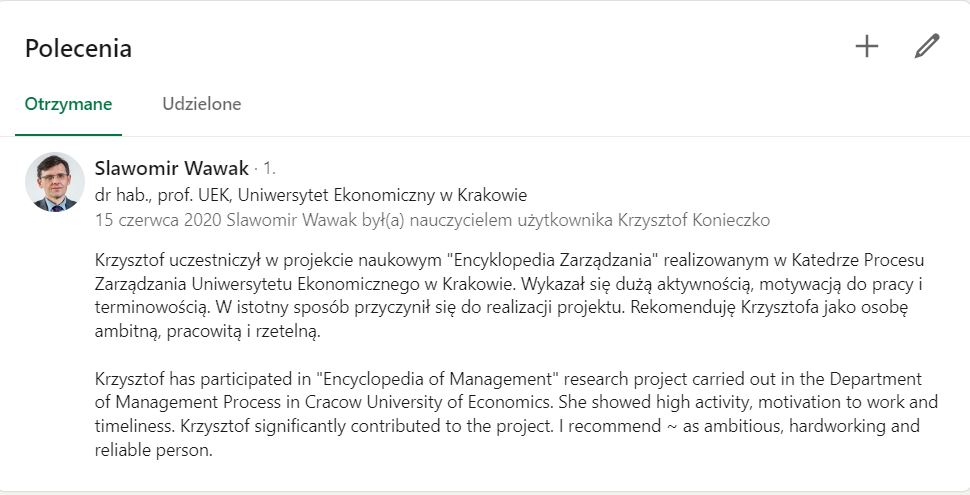

"
Krzysztof Konieczko
Project Manager, działacz społeczny, żołnierz, programista
Cześć, jestem Krzysiek!
Jest mi miło, że tu zaglądasz! Chciałbym opowiedzieć Ci trochę o sobie. Mieszkam na
podkarpaciu i chciałbym nauczyć się programowania. Od dawna byłem ciekaw jak to wszystko działa,
że w małym urządzeniu wpisuje się jakieś znaczki a na
monitorze
widać konkretne elementy,kolory i inne tego typu wymyślone rzeczy. Studiowałem w Rzeszowie i Krakowie
Zarządzanie ze specjalizacją Zarządzanie Projektami.
Pracuję jako Project Manager w firmie z branży motoryzacyjnej.
Od jakiegoś czasu czuję, że chciałbym spróbować czegoś nowego w życiu. Zacząłem się zastanawiać,
która branża da mi najwięcej radości i podjąłem decyzję najlepszą z możliwych!
Branża IT to przede wszystkim możliwości rozwoju,
potrzeba ciągłej nauki i motywacja do odkrywania nieznanego nam świata.
Hmmm...kto wie, może w przyszłości będę mógł prowadzić projekty IT?
Nie wiem czy zostanę w przyszłości programistą, ale bardzo mnie fascynuje programowanie.
Jestem człowiekiem, który jeśli coś postanowi to wytrwale dąży do celu dlatego myślę, że uda mi się dojść do
końca kursu.
Jestem przekonany, że jestem na dobrej drodze! Potrzebuję również Waszego wsparcia i motywowania.
Każdy jest kowalem swojego losu ale nie zapominajcie o nas!
Mając do czynienia z róznymi zajęciami w życiu muszę jasno stwierdzić, że ta daje najwięcej satysfakcji.
Nie jest jednak to łatwe zadanie. Każdy dzień będzie bogaty w niespodzianki i dużo nerwów kiedy kod nie
będzie działał.
Mimo wszystko nie poddam się!
Co robię w wolnym czasie?
W wolnym czasie uwielbiam uprawiać sport! Jest to dla mnie coś, bez czego nie
potrafię żyć!
W okresie zimowym staram się jak najczęściej jeździć na narty, okres letni to bardziej piłka nożna.
Są też dyscypliny, które można uprawiać cały rok np. pływanie czy ćwiczenia siłowe.
Ponadto jak tylko znajdę czas grama w szachy z moim tatą.
Uwielbiam czytać książki o różnej tematyce. Z reguły rozwojowe albo historyczno-polityczne.
Muszę się pochwalić bo zdałem ostatnio egzamin PSM I - Professional Scrum
Master.
Myślę, że przyda mi się w przyszłości kiedy będę zmieniał branżę.
Jest jeszcze coś, o czym chciałbym tu napisać. Jestem miłośnikiem gór.
Jak tylko moge jeżdzę w Bieszczady a tam odpoczywam na łonie natury.
Bardzo lubię podróże. Moja ostatnia podróż jaka miała miejsce była kilka miesięcy temu. Poleciałem do
Anglii odwiedzić przyjaciela.
Tam odwiedziliśmy Safari Zoo, które okazało się być bardzo ekscytującym przeżyciem! Na całym
terenie Zoo chodziły luźno zwierzęta,
ale my poruszaliśmy się samochodem. Wyjątkiem były dzikie zwierzęta, które były za ogrodzeniem. Mowa tu np o
lwach czy tygrysach.
Bardziej łagodne zwierzęta można było karmić. Osobiście karmiłem np żyrafy, zebry czy inne mniej lub
bardziej znane zwierzęta.
Jestem bardzo zadowolony z tego wyjazdu.
Doświadczenie zawodowe
Od 4 lat pracuję jako Project Manager w firmie z branży motoryzacyjnej.
Koordynuję pracę zespołu projektowego w kierunku wprowadzenia nowych wyrobów do produkcji seryjnej.
Jest to odpowiedzialna praca wymagająca szeregu złożonych kompetencji menedżerskich.
Kompetencje te najlepiej opisuje międzynarodowa organizacja certyfikująca Project Managerów - IPMA.
Na podstawie zebranych tam informacji i mojego doświadczenia postaram się określić poziom moich kompetencji
w kontekście pracy w obecnej firmie.
Do tego celu posłużę się tabelą Kompetencji zawartą w publikacji ICB 4.0 wydaną przez stowarzyszenie IPMA.
Oceny będą wystawione przez subiektytwne odczucie w skali 1-5.
Poziomy kompetencji obejmują:
Wiedzę: wykazanie się przyswojeniem materiałów poprzez przywołanie faktów, terminów, podstawowych
koncepcji
i odpowiedzi;
Rozumienie: wykazanie zrozumienia faktów i koncepcji poprzez porównanie, tłumaczenie, interpretację,
opis i
artykułowanie głównych koncepcji;
Zastosowanie: wykorzystanie nabytej wiedzy w celu rozwiązania problemów związanych z nowymi sytuacjami
poprzez zastosowanie faktów, technik, i zasad;
Analiza: weryfikowanie i segregowanie danych poprzez identyfikację motywów i przyczyn, wyciąganie
wniosków i
wyszukiwanie potwierdzenia uogólnień;
Synteza: tworzenie struktury lub schematu z różnych elementów, złożenie ich w całość; zbieranie
informacji
na różne sposoby poprzez łączenie elementów w nowy schemat lub zaproponowanie alternatywnych rozwiązań;
Ocena: prezentacja i obrona opinii poprzez ewaluację danych, pomysłów lub jakości pracy w oparciu o
zestaw
kryteriów.
2018-2020 - Uniwersytet Ekonomiczny w Krakowie - Zarządzanie, specjalizacja Zarządzanie projektami -
Magister*
*Jako student Uniwersytetu Ekonomicznego w Krakowie uczestniczyłem w projekcie naukowym "Encyklopedia
Zarządzania" co potwierdzone jest na portalu Linkedin przez Profesora UEK.

Kursy, szkolenia, certyfikaty
2023 - PSM I - Certyfikat Professional Scrum Master I
2022 - Agile Project Management - podstawy, teoria i praktyka
2021 - IPMA D - Certyfikat z zarządzania projektami wg międzynarodowej organizacji IPMA
2021 - APQP - Wdrożenie nowego produktu do produkcji wg APQP - Certyfikat
Fundacja Szlachetna Paczka, edycja 2021, 2022 - Lider Rejonu
Fundacja Pilnujwyborow.pl powstała w 2016 roku w celu dopilnowania
transparentności i uczciwości
wyborów
parlamentarnych, samorządowych oraz prezydenckich w Polsce. Jest to możliwe dzięki ogólnopolskiej
inicjatywie działającej w oparciu o system internetowy. W każdym obwodzie wyborczym należy wprowadzić
członków, którzy mogą wprowadzić wyniki z określonej komisji wyborczej do systemu internetowego. Następnie
po podliczeniu głosów, wyniki są porównywane z oficjalnym komunikatem PKW.
Moja rola polegała głównie na organizowaniu i szkoleniu członków komisji w gminie. Dodatkowo koordynowałem
pracę całego zespołu oraz reagowałem na ewentualne problemy.
Fundacja Szlachetna Paczka to ogólnopolski projekt społeczny organizowany przez Stowarzyszenie Wiosna od 2001 roku, którego głównym
celem jest materialna i mentalna pomoc rodzinom i osobom znajdującym się w trudnej sytuacji życiowej.
Organizacyjnie opiera się na pracy kilkunastu tysięcy wolontariuszy w całej Polsce koordynowanej z centrali
w Krakowie. Zasadą działania projektu jest tzw. mądra pomoc, czyli taki rodzaj bezpośredniego wsparcia,
który ma dać wybranym rodzinom narzędzia do tego, by były w stanie zacząć samodzielnie rozwiązywać swoje
problemy. Moim zadaniem była regionalna organizacja i szkolenie zespołu wolontariuszy, którzy potem docierali do potrzebujących z pomocą.